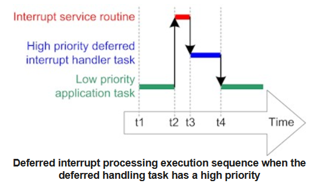

Opdracht 5: Interrupts in FreeRTOS
In dit practicum komt het gebruik van interrupts in FreeRTOS aan bod. Er zijn drie opdrachten:
In opdracht 5.1 wordt het principe van interrupts en de bijbehorende scheduling uitgelegd aan de hand van het indrukken van een drukknop.
In opdracht 5.2 worden periodiek interrupts gegenereerd door een klokgenerator.
In opdracht 5.3 worden periodieke interrupts gebruikt voor het uitvoeren van een lege control task. Daarnaast wordt een afzonderlijke task gebruikt voor het instellen van een parameter voor de control task.
5.1 Hardware-interrupts met een drukknop
Hardware-interrupts onderbreken de lopende programma-executie omdat er een externe gebeurtenis plaatsvindt, dus een gebeurtenis in de fysieke buitenwereld die onmiddellijk aandacht van de processor nodig heeft. Deze interrupts kunnen bijvoorbeeld afkomstig zijn van een extern device dat data beschikbaar heeft voor verwerking.
Door een interrupt kan de CPU op onvoorspelbare momenten worden onderbroken tijdens het uitvoeren van tasks. De code die direct en onmiddellijk moet worden uitgevoerd bij het afhandelen van een interrupt, heet een Interrupt Service Routine (ISR).
In FreeRTOS heeft een ISR een hogere prioriteit dan elke andere task. Dat betekent het volgende:
Een ISR is geen FreeRTOS-task en kan niet worden geblokkeerd. In een ISR kan dus bijvoorbeeld niet op een queue, mutex of semafoor worden gewacht.
Een ISR mag zichzelf niet blokkeren en mag dus geen potentieel oneindige herhalingen bevatten. Een ISR heeft een hogere prioriteit dan de scheduler en kan bij een oneindige herhaling ervoor zorgen dat het systeem vastloopt.
Een ISR moet zo kort mogelijk zijn, zowel in tijd als in uitvoerbare code. In een ISR mogen alleen de hoogst noodzakelijke acties worden uitgevoerd. Welke acties dat zijn, hangt meestal af van het device dat de interrupt genereert.
In een ISR mag slechts gebruik worden gemaakt van enkele speciale FreeRTOS-functies. Deze hebben de vorm
<functienaam>FromISR. Andere FreeRTOS-functies mogen absoluut niet worden gebruikt, omdat het systeem anders kan crashen of vastlopen. Een voorbeeld van een FreeRTOS-functie die in een ISR wel mag worden gebruikt, isxSemaphoreGiveFromISR.Op de ESP32 wordt een ISR gemarkeerd met
IRAM_ATTR, zodat de code in het interne RAM staat en snel kan worden uitgevoerd.
5.1.1 Deferred Interrupt Processing
Om een interrupt toch in een normale FreeRTOS-task te kunnen afhandelen, wordt gebruikgemaakt van Deferred Interrupt Processing (uitgestelde interruptafhandeling). Hierbij wordt de niet-tijdkritische verwerking van de data niet in de ISR zelf uitgevoerd, maar uitgesteld en verder afgehandeld in een normale FreeRTOS-task. Meestal heeft die task een hogere prioriteit dan alle andere (applicatie)tasks, maar per definitie een lagere prioriteit dan de interrupt.
Een ISR heeft daarom uitsluitend de volgende beperkte functionaliteit:
Het afhandelen van de absoluut noodzakelijke acties, zoals het registreren van de interruptbron of -oorzaak en het wegnemen van de oorzaak van de interrupt. Dit hangt vaak af van het type device dat de interrupt genereert.
Het signaleren aan de FreeRTOS-scheduler dat een interrupt is opgetreden en dat een FreeRTOS-task de data moet verwerken. Met andere woorden: de ISR zal meestal een task deblokkeren. Dit kan bijvoorbeeld met de functie
xSemaphoreGiveFromISR.
Zie figuur 1 voor een voorbeeld van Deferred Interrupt Processing (bron: FreeRTOS: Deferred Interrupt Processing).

Figuur 1. Deferred Interrupt Processing
Als de FreeRTOS-task die de interrupt moet afhandelen een voldoende hoge prioriteit heeft ten opzichte van de overige tasks, wordt deze onmiddellijk uitgevoerd nadat de zeer korte ISR klaar is. Feitelijk wordt de verwerking van de interrupt aaneengesloten in de tijd uitgevoerd, alsof alle verwerking in de ISR zelf had plaatsgevonden. Zie figuur 1: alle interruptverwerking vindt plaats tussen de tijdstippen \(t_2\) en \(t_4\), ook al wordt een deel van de verwerking uitgevoerd door een task (het blauwe deel).
Op de ESP32 ziet een ISR die een task deblokkeert er in grote lijnen als volgt uit:
void IRAM_ATTR interruptHandler(void)
{
BaseType_t higherPriorityTaskWoken = pdFALSE;
// ... hoogst noodzakelijke acties ...
xSemaphoreGiveFromISR(handle_InterruptSemaphore, &higherPriorityTaskWoken);
// laat de scheduler direct wisselen als er een task met hogere prioriteit is gedeblokkeerd
portYIELD_FROM_ISR(higherPriorityTaskWoken);
}
Een ISR wordt aan een GPIO-pin gekoppeld met de Arduino-functie attachInterrupt. Deze functie koppelt de handler én zet de interrupt aan:
pinMode(pin, INPUT_PULLUP);
attachInterrupt(digitalPinToInterrupt(pin), interruptHandler, FALLING);
5.1.2 Opdracht
Om inzicht te krijgen in de werking van interrupts, wordt in de volgende opdracht een interrupt gegenereerd door het indrukken van de drukknop op het NodeMCU-Shield die rechtstreeks op de ESP32 is aangesloten (BUTTON_0 in de code, GPIO 4, zie ook de knopbibliotheek). De andere knoppen zijn niet rechtstreeks op een GPIO-pin aangesloten en worden in deze opdracht niet gebruikt. Deze interrupt wordt afgehandeld door een ISR en een bijbehorende FreeRTOS-task. Als de knop wordt ingedrukt, gebeurt het volgende:
De globale variabele
g_InterruptCountwordt in de ISR met één verhoogd.Een FreeRTOS-task laat vervolgens de waarde van deze variabele zien, dus 1, 2, 3 enzovoort, en wordt geblokkeerd totdat de knop weer wordt ingedrukt.
Open in Visual Studio Code de folder/map <path-to-your-project>/workspace/assignments/5_1_button_interrupts.
Waarschuwing
Voeg uitsluitend code toe aan, of wijzig code in, het bestand src/main.cpp. Alle overige folders bevatten bestanden voor de systeemconfiguratie en bibliotheken. Laat deze ongewijzigd.
Zoek in het bestand src/main.cpp naar de tekenreeks TODO voor de bijbehorende aanwijzingen in de broncode.
Opdracht 5.1.2
In het framework is de task
TaskInterruptHandleral gegeven. Dit is een FreeRTOS-task die wordt gestart in de functieStartUserTasks. Zorg ervoor dat deze op een voldoende hoge prioriteit wordt uitgevoerd.Declareer de globale variabele
g_InterruptCountvan het typeuint32_tmet beginwaarde 0.Declareer de globale handle
handle_InterruptSemaphorevan het typeSemaphoreHandle_tmet beginwaardeNULL. Dat betekent dat deze semafoor nog niet is geïnitialiseerd.Maak met deze globale handle een semafoor in de functie
TaskInterruptHandler. Maak gebruik van de functiexSemaphoreCreateCounting. Bepaal de juiste waarden van de parameters voor deze functie aan de hand van de documentatie. Deze semafoor wordt gebruikt om vanuit de ISR de bijbehorende task te deblokkeren.Gegeven is de (nog niet complete) ISR-functie
interruptHandler. Deze functie moet worden aangeroepen als de drukknop wordt ingedrukt. Let op: deze functie wordt “aangeroepen” door een hardware-event; het is dus niet mogelijk om deze rechtstreeks vanuit de programmacode aan te roepen zoals een gewone functie. De bijbehorende semafoor mag pas worden vrijgegeven nádat deze is geïnitialiseerd, vandaar de controle opNULL(anders kan het systeem crashen).Koppel de functie
interruptHandlerin de functieTaskInterruptHandleraan de drukknop metattachInterrupt:Zet de pin eerst als ingang met
pinMode(BUTTON_0, INPUT_PULLUP).Gebruik de flank
FALLING: bij het indrukken van de knop vindt een overgang van HOOG naar LAAG plaats op de ingang van de microcontroller (vanwege de pull-up-weerstand). Als er een interrupt moet optreden bij het loslaten van de knop, moetRISINGworden gebruikt.Koppel de interrupt pas nadat de semafoor is aangemaakt.
Pas de code in de functie
TaskInterruptHandlerzodanig aan dat deze het volgende doet:Wacht op de semafoor die in de ISR wordt vrijgegeven.
Laat de waarde van
g_InterruptCountzien zodra de knop is ingedrukt (dus 1, 2, 3 enzovoort) en wacht daarna totdat de knop weer wordt ingedrukt.
Opdracht 5.1.3
Druk een aantal keren op de knop. Neemt g_InterruptCount bij elke druk precies met één toe? Verklaar wat je ziet (denk aan contactdender van de knop).
5.2 Periodieke clock-interrupts
Mechatronische regelsystemen maken vaak gebruik van een hard periodiek kloksignaal met een vaste frequentie, afkomstig van een externe bron. De frequentie waarmee sensoren moeten worden gesampled en de frequentie waarmee actuatoren moeten worden aangestuurd, bepalen de gewenste frequentie van dat externe kloksignaal.
In dit practicum wordt gebruikgemaakt van een externe klok van 1 kHz, met een periodetijd van 1 ms. De frequentie van 1 kHz is een realistische waarde die ook bij projecten in periode 3.3 en periode 3.4 wordt toegepast.
Dit kloksignaal is afkomstig van de klokgenerator op het NodeMCU-Shield (DE9-connector J6). Deze klok is afgeleid van een kristaloscillator en levert verschillende frequenties, onder andere 1 kHz.
Verbind met de daarvoor bedoelde kabel de 1 kHz-uitgang van de klokgenerator (J6) met digitale ingang D0 (pin 1 van DE9-connector J11). Deze ingang is op de ESP32 aangesloten op GPIO 36 (interrupt_pin in de code).
Notitie
Deze opdracht is vergelijkbaar met de vorige opdracht, waarbij een drukknop een interrupt genereerde. Ook de code is vergelijkbaar. Een belangrijk verschil is echter dat de frequentie van de interrupts veel hoger is (\(f = 1\ \mathrm{kHz}\), \(T = 1\ \mathrm{ms}\)), waardoor de interrupt-handler daarop moet worden aangepast.
Open in Visual Studio Code de folder/map <path-to-your-project>/workspace/assignments/5_2_timer_interrupts_1. Zoek in het bestand src/main.cpp naar de tekenreeks TODO voor de bijbehorende aanwijzingen in de broncode.
Opdracht 5.2.1
In het framework is de task
TaskTimerInterruptHandleral gegeven. Dit is een FreeRTOS-task die wordt gestart in de functieStartUserTasks. Zorg ervoor dat deze op een voldoende hoge prioriteit wordt uitgevoerd.Declareer de globale variabele
g_InterruptCountvan het typeuint32_tmet beginwaarde 0.Declareer de globale handle
handle_InterruptSemaphorevan het typeSemaphoreHandle_tmet beginwaardeNULL.Maak met deze globale handle een semafoor in de functie
TaskTimerInterruptHandler. Maak gebruik van de functiexSemaphoreCreateCountingen bepaal de juiste waarden voormaxSemCounteninitialSemCount.Gegeven is de (nog niet complete) ISR-functie
ClockInterruptHandler. Deze functie moet bij elk klokevent, dus elke milliseconde, worden aangeroepen. Ook deze functie kan niet rechtstreeks vanuit de programmacode worden aangeroepen. De semafoor mag pas worden vrijgegeven nádat deze is geïnitialiseerd, vandaar de controle opNULL.In de vorige opdracht met de drukknop werd de bijbehorende task bij elke interrupt gedeblokkeerd. Bij deze opdracht moet de task niet bij elke interrupt (die elke milliseconde optreedt) worden gedeblokkeerd, maar slechts elke seconde. Dat betekent dat het deblokkeren moet gebeuren bij elke 1000e interrupt.
Koppel de functie
ClockInterruptHandleraan de klok metpinMode(interrupt_pin, INPUT)enattachInterrupt(digitalPinToInterrupt(interrupt_pin), ClockInterruptHandler, FALLING).RISINGmag ook; het is immers een periodiek signaal. Koppel de interrupt pas nadat de semafoor is aangemaakt.Laat in
TaskTimerInterruptHandlerelke seconde zowelg_InterruptCount(het aantal “harde” klokinterrupts, elke milliseconde) alstaskInterruptCount(het aantal keer dat de task is gedeblokkeerd, elke seconde) zien. De laatste moet dus een factor 1000 kleiner zijn!
5.3 Periodieke clock-interrupts combineren met queues
In een mechatronisch regelsysteem is er minimaal één task die periodiek het regelalgoritme uitvoert: de control task. De periodetijd wordt bepaald door de klokfrequentie van een externe klok, zoals in opdracht 5.2 met een frequentie van 1 kHz. In opdracht 5.2 is de control task geïmplementeerd in de functie TaskTimerInterruptHandler.
Daarnaast zijn er meestal één of meer tasks met een andere functionaliteit, zoals het tijdens runtime instellen van één of meer parameters in de control task. In deze opdracht krijgt de control task een waarde aangeleverd door een task die één van de potmeters uitleest en de waarde daarvan in een queue zet. Deze queue bevat precies één waarde. De control task leest de waarde uit die in de queue is gezet.
Open in Visual Studio Code de folder/map <path-to-your-project>/workspace/assignments/5_3_timer_interrupts_2. Zoek in het bestand src/main.cpp naar de tekenreeks TODO voor de bijbehorende aanwijzingen in de broncode.
De functie fmap
In deze opdracht wordt gebruikgemaakt van de functie fmap (zie de map-bibliotheek). Deze functie beeldt, ofwel “mapt”, de aangeboden ingangswaarde x1 in het bereik [in_min, in_max] lineair af op de waarde y1 in het uitgangsbereik [out_min, out_max], zie figuur 2.
Figuur 2. De functie fmap
Voorbeeld 1: een ruwe ADC-waarde adcValue tussen 0 en 4095 (zoals teruggegeven door adc.ReadRaw()) kan worden afgebeeld op een bereik tussen -3,0 en 8,0:
mappedValue = fmap(adcValue, 0, 4095, -3.0, 8.0);
Voorbeeld 2: de functie kan worden gebruikt om de ADC-waarde adcValue om te zetten naar een relevante waarde voor de gebruiker of applicatie, bijvoorbeeld een bandbreedte tussen 35 Hz en 70 Hz:
bandBreedte = fmap(adcValue, 0, 4095, 35.0, 70.0);
Opdracht 5.3.1
In het framework is de control task
TaskTimerInterruptHandleral gegeven. Zorg ervoor dat deze op een voldoende hoge prioriteit wordt uitgevoerd.Ook de interrupt-handler die elke milliseconde door de klok wordt aangeroepen (
ClockInterruptHandler) is al gegeven.Declareer een globale queue-handle
handle_ParameterQueuevan het typeQueueHandle_ten maak inStartUserTaskseen queue voor precies één waarde van het typedouble.Start in
StartUserTasksook de taskTaskParameterSetting. Geef het ADC-kanaal van potmeter RV1/P0 (kanaal 4) mee als parameter.Een deel van de task
TaskParameterSettingis al gegeven. Maak deze functie af. Deze functie moet het volgende continu blijven herhalen:Lees de spanning van het meegegeven kanaal met
adc.ReadVoltage(channel). Voor de potmeter ligt deze waarde altijd tussen 0 V en 2,5 V.Normaliseer deze waarde met de functie
fmapvan het bereik 0 – 2,5 V naar het bereikminValue–maxValue.Als deze genormaliseerde waarde voldoende afwijkt van de vorige waarde (meer dan
threshold), zet dan de nieuwe genormaliseerde waarde in de queue (met lengte één) door de vorige waarde te overschrijven. Gebruik hiervoor de functiexQueueOverwrite. Als het verschil met de vorige waarde te klein is, hoeft de waarde niet in de queue te worden gezet.Wacht 10 ms met
vTaskDelay(pdMS_TO_TICKS(10)).
Lees vervolgens in de control task (
TaskTimerInterruptHandler) de queue uit waarin de genormaliseerde waarde van de potmeter staat, en druk deze af in de Terminal. De queue moet worden uitgelezen met de functiexQueuePeek(en niet met de functiexQueueReceive).xQueuePeekverwijdert de gelezen waarde niet uit de queue: er blijft dus altijd precies één geldige waarde in staan, namelijk de laatste waarde die door de taskTaskParameterSettingin de queue is gezet.